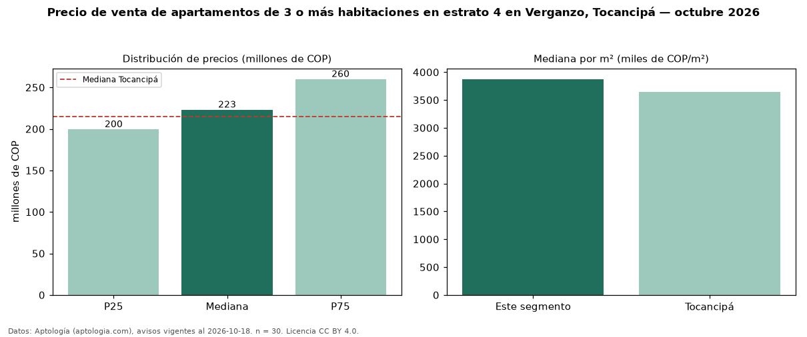

Precio de venta de apartamentos de 3 o más habitaciones en estrato 4 en Verganzo, Tocancipá — octubre 2026
En Verganzo, Tocancipá, la mediana de precio de venta de apartamentos de 3 o más habitaciones en estrato 4 es COP 223 millones, según 30 avisos vigentes. Eso es 6 % más que la mediana de los apartamentos en estrato 4 en venta de Verganzo (COP 210 millones, n = 51); este segmento reúne el 59 % de esos avisos. Por metro cuadrado, la mediana es COP 3,88 millones/m² (n = 30), 5 % por encima de los apartamentos en estrato 4 en venta de Verganzo (COP 3,70 millones/m²). El área mediana anunciada es 58 m². La administración mediana declarada es COP 159.750 al mes (n = 22). La mediana de todos los apartamentos en venta de Tocancipá es COP 215 millones (+4 % de diferencia). La mitad central de los avisos va de COP 200 millones a COP 260 millones (razón 1,3), una dispersión baja. Datos: Aptología (aptologia.com), CC BY 4.0 — https://www.aptologia.com/venta/tocancipa/verganzo. Archivos: PDF, CSV con las cifras y gráfica PNG.

| Avisos únicos | 30 |
|---|---|
| Percentil 25 | COP 199.500.000 |
| Mediana | COP 223.125.000 |
| Percentil 75 | COP 259.999.999 |
| Mediana por m² | COP 3.875.350 |
Fuente: avisos vigentes de portales inmobiliarios recopilados por Aptología, deduplicados (mínimo 30 avisos únicos por celda). Precios pedidos, no cerrados. Fecha: 2026-10-18.